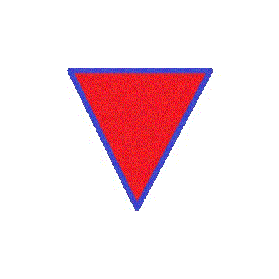

Vector triangle: <br>
<svg width="10cm" height="10cm" viewBox="0 0 400 400">
	<title>Triangle - vector path</title>
	<desc>A path that draws a triangle</desc>
	<rect x="1" y="1" width="398" height="398"
	        fill="none" stroke="blue" />
	<path d="M 100 100 L 300 100 L 200 300 z"
	        fill="pink" stroke="blue" stroke-width="3" />
</svg>
<br><br>
This is a BMP:<br>

<br><br>
This is a JPG:<br>

<br><br>
This is a GIF, with 8 bit colour depth:<br>
